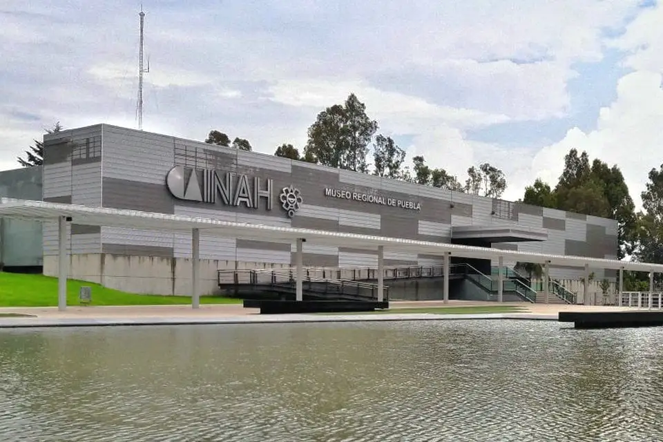
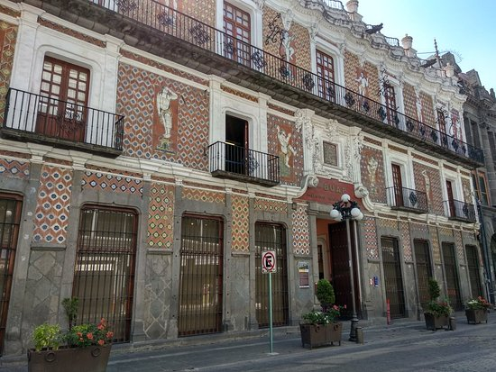
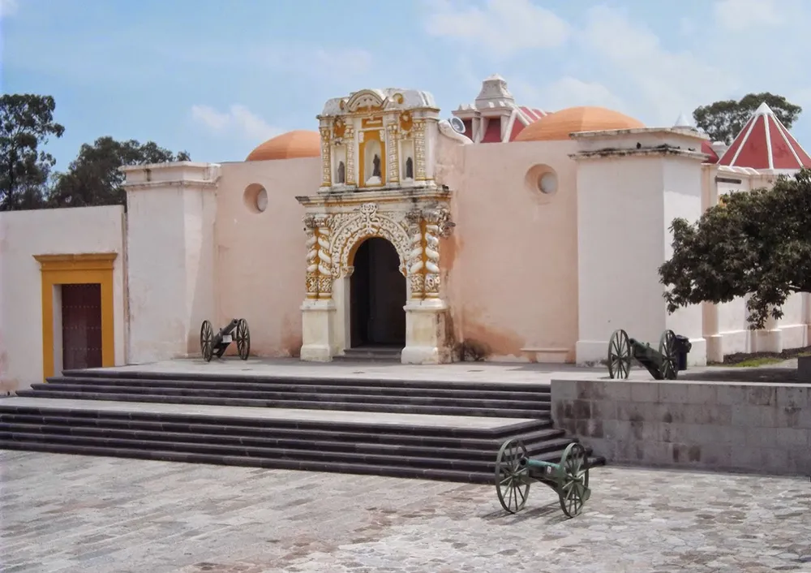
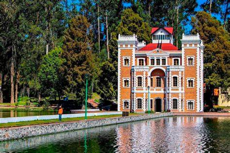
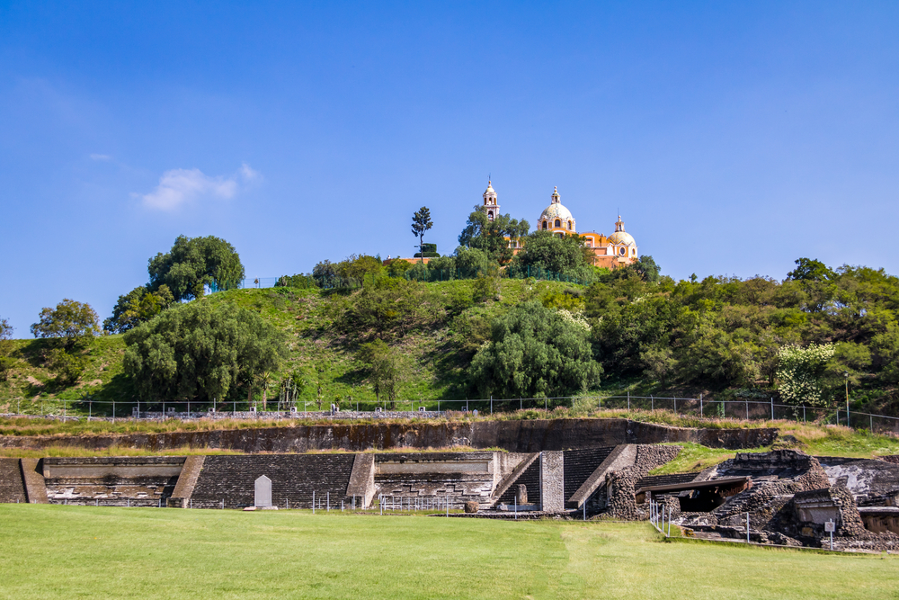
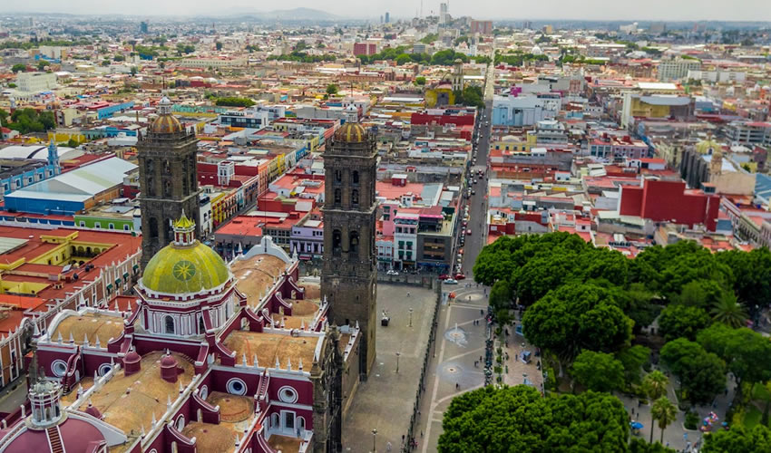

Lugares Culturales en Puebla

Museo Regional de Puebla
Descubre la historia y cultura de Puebla en este museo emblemático.
Más información

Museo Universitario Casa de los Muñecos
Un espacio cultural y de expresión artística con un acervo impresionante.
Más información

Museo de La No Intervención Fuerte de Loreto
Explora la historia militar de Puebla en este histórico fuerte.
Más información

Ex-Hacienda de Chautla
Un hermoso lugar histórico con jardines y un lago, perfecto para un día de campo.
Más información

Gran Pirámide de Cholula
Visita la pirámide más grande del mundo en volumen, con túneles y una iglesia en la cima.
Más información

Capilla del Rosario
Una joya del arte barroco mexicano, ubicada en el Templo de Santo Domingo.
Más información